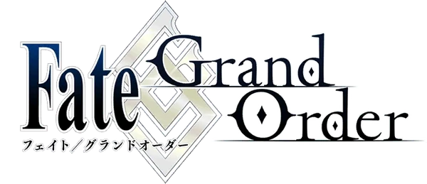

Fate Grand Order esta desarrollado por Delightwork y publicado por Aniplex . El juego está basado en la franquicia FATE de Type-Moon, el mismo fue lanzado en Japón el 29 de julio del 2015 para Andriod y el 12 de agosto del 2015 para IOS. La versión en inglés llegó el 25 de junio del 2017 a Estados Unidos y Canadá, luego una versión coreana se lanzó el 21 de noviewmbre de 2017. El juego se centra en el combate por turnos, el jugador que asume el papel de un "MASTER" convoca a personajes de la historia conocidos como "SERVANTS" para luchar contra los enemigos. La narración de la historia se presenta en formato de novela visual, aqui cada uno de los "SERVANTS" tiene su propia personalidad e historia donde el jugador puede interactuar. El juego presenta una histria lineal divida en tres grandes partes:
Primera Parte - (Observer on Timeless Temple) Esta es la parte principal del juego. Comienza con el Epílogo en Fuyuki y continúa a través de siete Singularidades :
Fuyuki

Orleands

Spetem

Okeanos

London

E Pluribus Unum

Camelot

Babylonia

Solomon